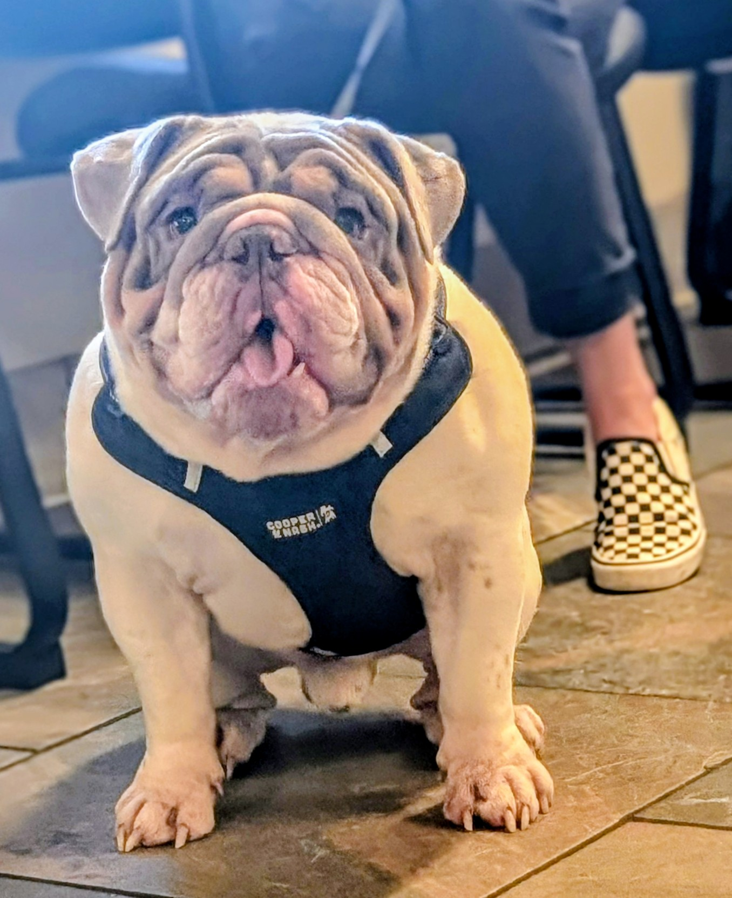

Our studs are chosen for health, structure, and temperament — Bulldogs that pass on the best of the breed. AKC registered, health-tested, and living the good life as part of our family. Meet the gentlemen.

AKC: Lilac · Annie Marvel's son
Lineage: Out of Annie Marvel, Lucy's grandson
Bilbo is Annie's boy — carrying forward the sturdy structure and even temperament his mom is known for. A handsome lilac with classic Bulldog wrinkles, he's alert, friendly, and always ready for the next adventure. He's got his mom's athleticism and his grandmother Lucy's gentle soul.
Available for stud service: Yes — to approved, health-tested AKC females. Contact us for details.
Interested in using Bilbo for your AKC female? Reach out — we work with approved, health-tested dams only.
When we have a litter, our Available Puppies page is where it shows up first.
See Available Puppies